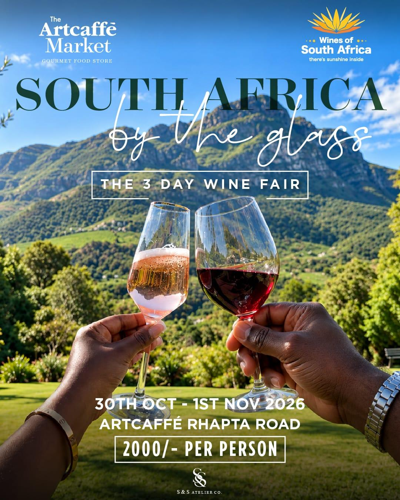
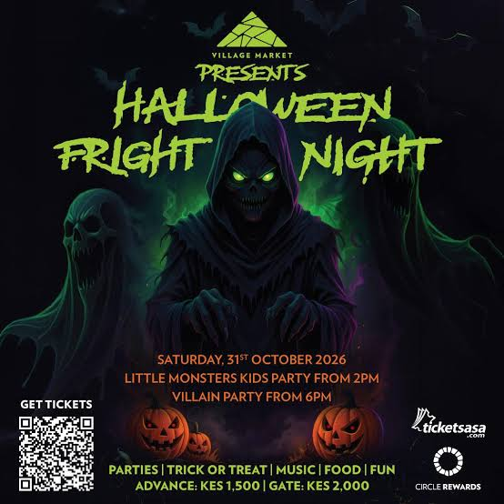

Nairobi this weekend: 30 October – 1 November
Halloween lands on a Saturday, the Floodies crown their champions and a classic Kenyan cartoon gets a new book. Here's where to be from Friday to Sunday.
It's a Halloween weekend, and the city has leaned into it: costume parties for kids and grown-ups, a rock night dressed up for the occasion. But there's plenty for people who'd rather skip the face paint, from a three-day wine fair and a weekend-long comedy at the National Theatre to the biggest night of Kenya's rugby pre-season.
Fri 30 Oct – Sun 1 Nov · Artcaffé, Rhapta RoadSouth Africa by the Glass

Artcaffé Market and Wines of South Africa are running a three-day wine fair at the Artcaffé on Rhapta Road in Westlands, from Friday 30 October to Sunday 1 November. It's billed simply as “the 3 day wine fair”: a weekend of tastings built around South African wine, with entry at KSh 2,000 per person.
Good to know: the price is per person, so budget for the whole group if you're going as a crew.
Fri 30 Oct – Sun 1 Nov · Kenya National TheatreLet Me Confess
The Crony brings its comedy play Let Me Confess to the Kenya National Theatre for three days, Friday to Sunday. The play is directed by Ndeng'a and produced by Victor Nyaata, and there are two shows each day.
The 3pm shows cost KSh 1,500 and the 6:30pm shows cost KSh 2,000, so the matinee is the cheaper way in. Booking details are on Crony Productions' site.
Sat 31 Oct · Impala Club, Ngong RoadImpala Floodlit Finals

The 43rd Impala Floodlit Tournament, the Floodies, has been played over three Saturdays at Impala Club on Ngong Road, and this is the last of them. Finals day covers every category, including the club, ladies' and university competitions.
The headline game is the club final. Ten-time champions KCB Rugby booked their place with a 64–11 thrashing of Mwamba RFC in last week's semi-final, and they'll face Kenya Harlequin for the title.
Sat 31 Oct · Village Market, GigiriHalloween Fright Night

Village Market's Halloween Fright Night splits the day in two. The Little Monsters kids' party starts at 2pm, and the Villain party takes over from 6pm, with trick-or-treating, music and food on the programme.
Tickets are KES 1,500 in advance on Ticketsasa and KES 2,000 at the gate, so it pays to book ahead.
Sat 31 Oct · 3–6pm · KNLS, Upper HillIt's a Madd Madd World
It's a Madd Madd World! is the satirical cartoon page that the cartoonist Maddo, Paul Kelemba, has drawn for The Standard for decades. In 2015 it won him the CNN MultiChoice African Journalist award, and the page has become a weekly record of Kenyan politics and public life told through caricature.
A new collection, A World Caged! 2012–2016, launches at the Kenya National Library's Maktaba Kuu building in Upper Hill on Saturday from 3pm to 6pm. Entry is free. It covers years that gave a cartoonist plenty to work with, at home and abroad.
Sat 31 Oct · 7pm · Sarakasi Dome, NgaraRock Riot Halloween
Rock Riot, an A-List Events series, puts on a Halloween edition at Sarakasi Dome in Ngara. The lineup is Rash Band, Keni and Nessa Dove, with DJ Orts and DJ Edygrim on the decks.
Rash Band are a Swahili rock band from Nairobi. Doors are at 7pm, and tickets are on a-list-events.com. Costumes, given the date, are very much encouraged.
Coming up · from Wed 4 NovNext week: KITFest
Plan ahead for the 11th Kenya International Theatre Festival. It opens on Wednesday 4 November at the Kenya National Theatre and runs to Sunday 15 November, with productions across four stages.
Sources
- Nairobi Events Guide: Let Me Confess and the South Africa wine fair
- Citizen Digital: KCB RFC set up Impala Floodlit final against Kenya Harlequin
- Citizen Digital: Impala Floodlit semis promise high-octane rugby action
- Mozzart Sport: KCB storm maiden Impala Floodlights final since 2023
- Newsline: 43rd Impala Floodlit semifinals
- Capital FM: Impala Floodlit receives Safaricom sponsorship
- Ticketsasa: Halloween Fright Night Party
- The Rio Times: What to do in Nairobi in October 2026
- AllEvents: Launch of Anthology of Madd Madd World 2012–2016
- Wikipedia: Maddo
- The Standard: Cartoonist Maddo becomes the first CNN winner to skive acceptance speech
- KenyaBuzz: Rock Riot Halloween Edition
- Music In Africa: Rash Band
- Capital FM: 6 Kenyan rock bands that deserve your attention
- The Rio Times: Kenya International Theatre Festival opens 4 November
- KenyaBuzz: KITFest 2026